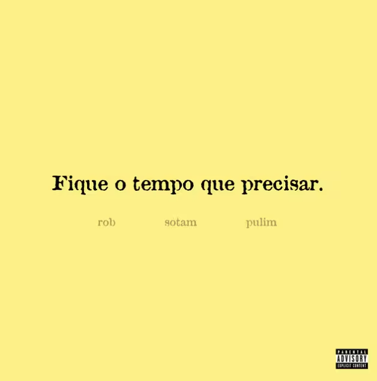

Sotam
Rapper e cantor
Conheça a trajetória, as músicas e os principais trabalhos de Sotam.
O artista
Quem é Sotam?
Sotam, nome artístico de Thomaz Matos, é um rapper e artista brasileiro de São Paulo, conhecido por seu trabalho na nova geração do rap nacional. Sua música transita por diferentes influências e aborda temas como relacionamentos, sentimentos e experiências pessoais.
Ao longo de sua carreira, Sotam desenvolveu uma identidade própria dentro da música brasileira, especialmente por meio de trabalhos ligados ao rap, R&B e outras sonoridades contemporâneas. Em seus primeiros anos de carreira, ganhou reconhecimento por músicas com temática romântica e, posteriormente, ampliou sua abordagem artística. Seu trabalho passeia pelo rap, R&B e outros estilos,trazendo músicas que falam sobre sentimentos, relações e experiências do dia a dia.
Trajetória
Sotam começou a ganhar maior reconhecimento a partir de seus lançamentos e colaborações com outros artistas da cena do rap. Entre trabalhos mencionados em sua trajetória estão músicas como "Venus Ivy", "Safari", "3AM (PXT4 RASA)", além de projetos como CRUSH, DEPOIS DAS 5, TRÊS2 e Para Nunca Nos Tornarmos Estranhos.
Em 2023, a faixa "3AM (PXT4 RASA)" ganhou destaque nacional e recebeu certificações de Ouro e Platina. Em 2024, Sotam participou do álbum colaborativo TRÊS2, com Kweller e Enzo Cello, e lançou o projeto Para Nunca Nos Tornarmos Estranhos. Entre seus trabalhos mais recentes estão projetos como SEM PAUSA, Até o Próximo Carnaval Vol. 2, Nos Tornamos Estranhos e Fique o tempo que precisar. A música "Foi Assim" também alcançou destaque nas plataformas digitais e nas redes sociais.
Músicas em destaque
Bloco dos Apaixonados
Sem Pausa
Sinceramente

Foi Assim
3AM (PXT4 RASA)
Cura
Contato
Acompanhe o trabalho de Sotam pelas redes sociais e plataformas de música.